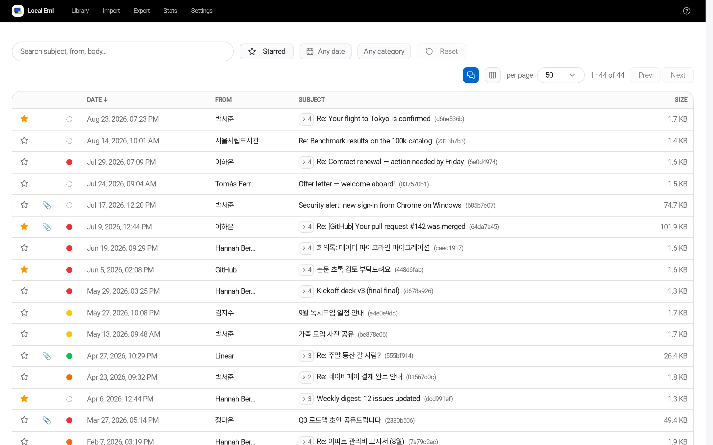
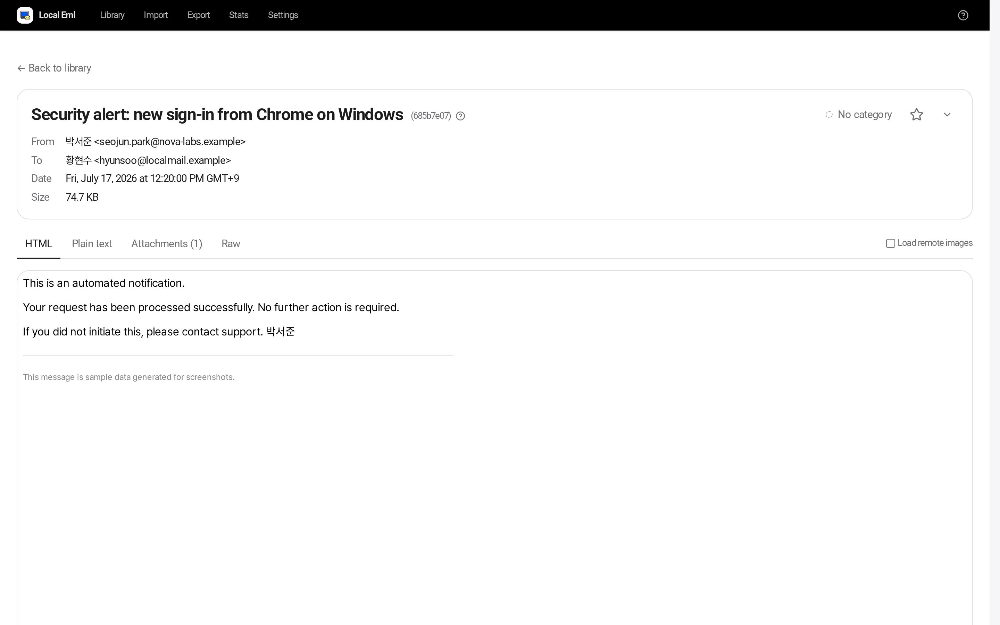

Local-first email archive
Your old mail,on your own disk.
Pull messages out of an overflowing mailbox, keep them as plain .eml files on your PC,
and search and read them any time. One binary, no account, nothing leaves your machine.
Other platforms Windows · macOS · Linux · GPL-3.0

A quiet place to read
Everything runs on 127.0.0.1 in your normal browser. It looks like an app, not a server.

HTML mail in a sandboxed frame, remote images blocked, attachments listed, the whole conversation one click away.
Install in one line
Downloads the latest release, verifies it, and registers a background service that starts on boot.
curl -fsSL https://raw.githubusercontent.com/hwhang0917/local-eml/main/scripts/install.sh | shirm https://raw.githubusercontent.com/hwhang0917/local-eml/main/scripts/install.ps1 | iexNot comfortable with terminals? Download the file for your OS and double-click it. Local Eml opens in its own window. Close the window when you're done and nothing keeps running in the background.
What it does
Import anything
.eml files, folders, .zip, .mbox (Google Takeout, Thunderbird), Outlook .pst, an S3 bucket, or an IMAP mailbox. Duplicates are skipped by hash.
Search that speaks CJK
Full-text search over sender, subject and body. Korean, Japanese and Chinese work out of the box, and typing just the initial consonants (ㅎㄱ → 한국) finds it too.
Private by design
Listens only on 127.0.0.1. No account, no telemetry, no cloud. IMAP passwords are never stored unless you opt in, and then only encrypted with a key that stays on your disk.
Reads HTML safely
Messages render in a sandboxed frame with remote images blocked by default, so tracking pixels stay blind.
Keeps up with new mail
Turn on background sync for any IMAP profile and it fetches only what is new since last time. Read-only: your mailbox is never modified.
Yours to take with you
Export the whole library as a single .zip or push it to S3. Stars, categories and settings travel with it.
What it isn't: a mail client. You can't compose, send or reply. Keep your usual client for daily mail; use Local Eml for the mail you want to keep but not carry.